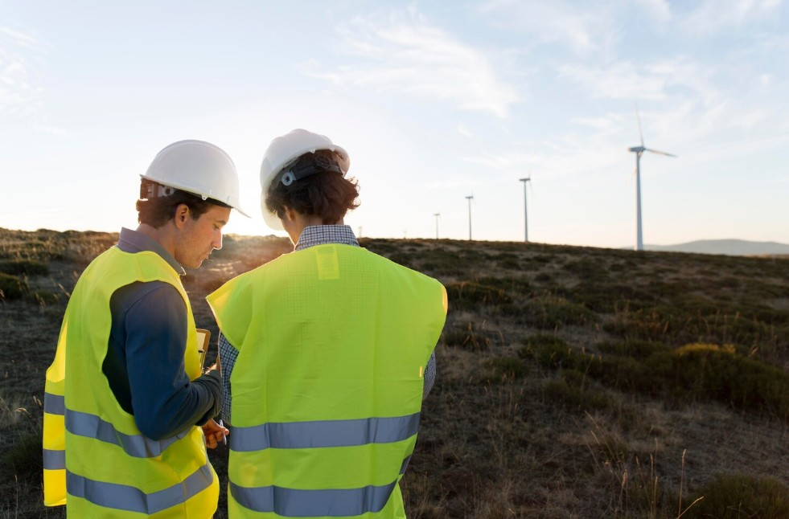
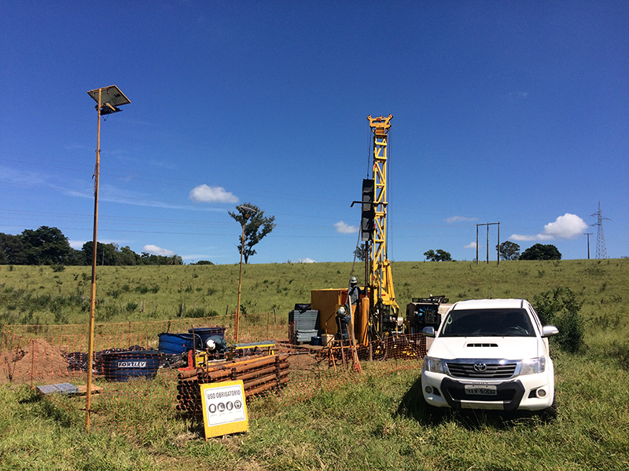
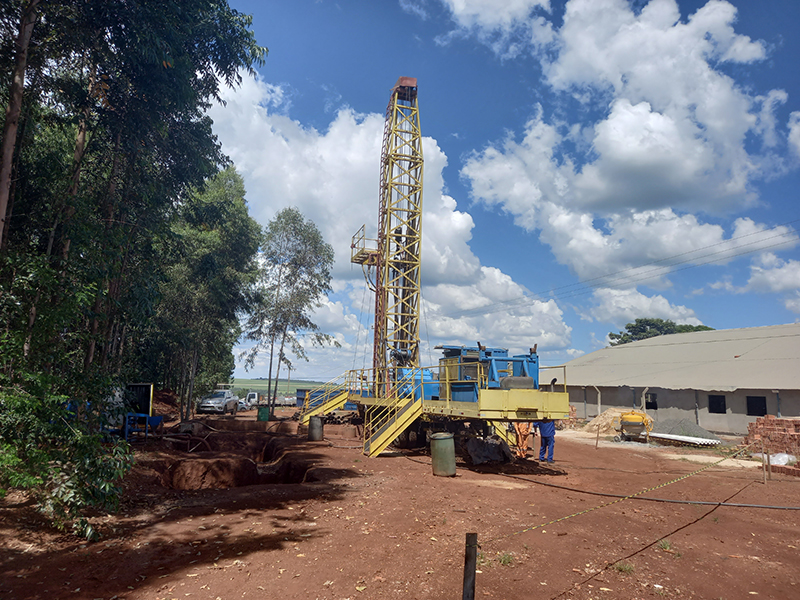
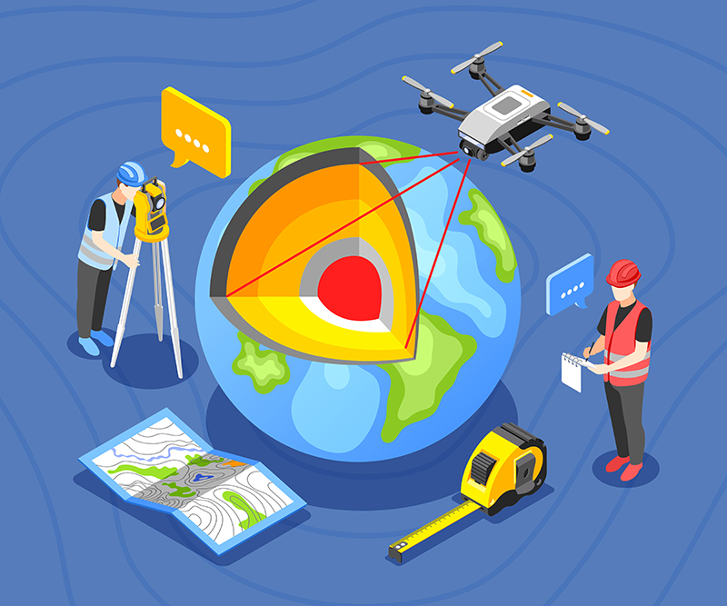
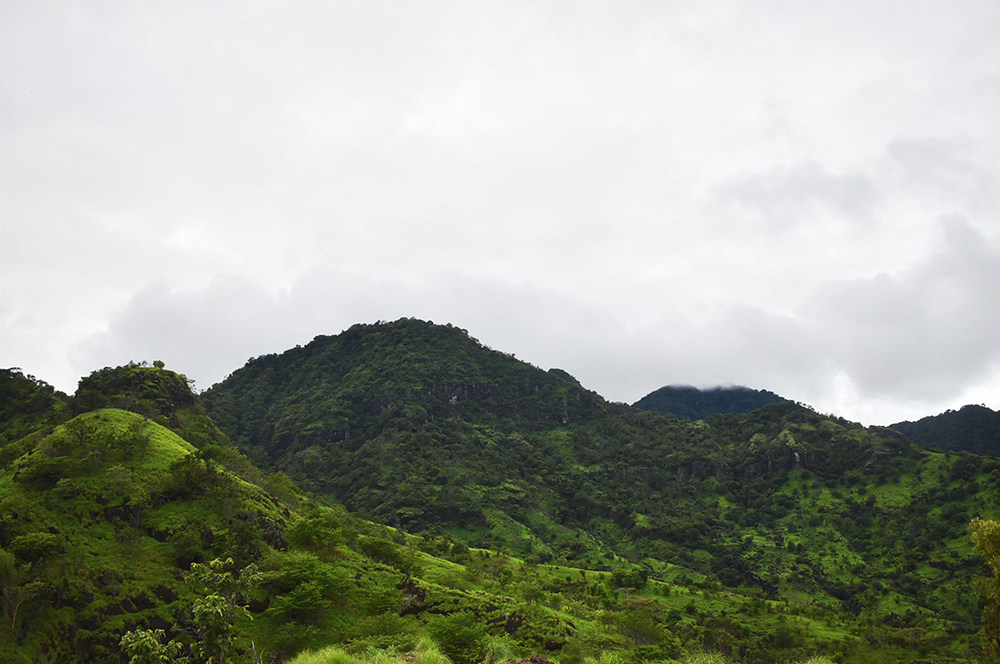
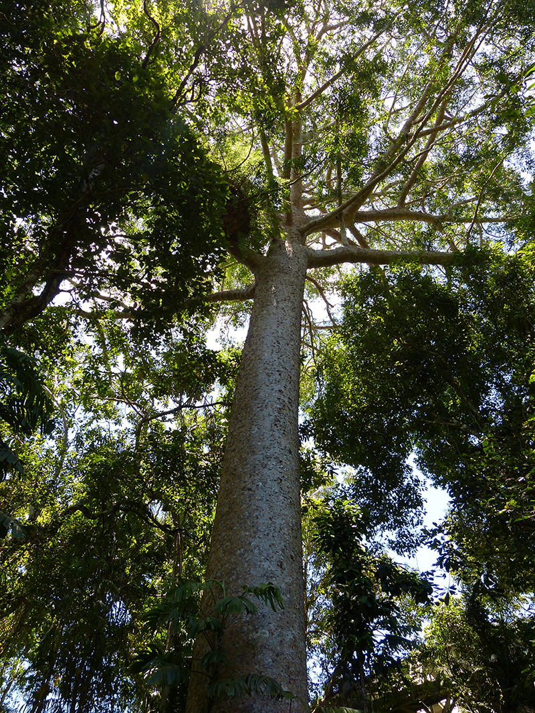
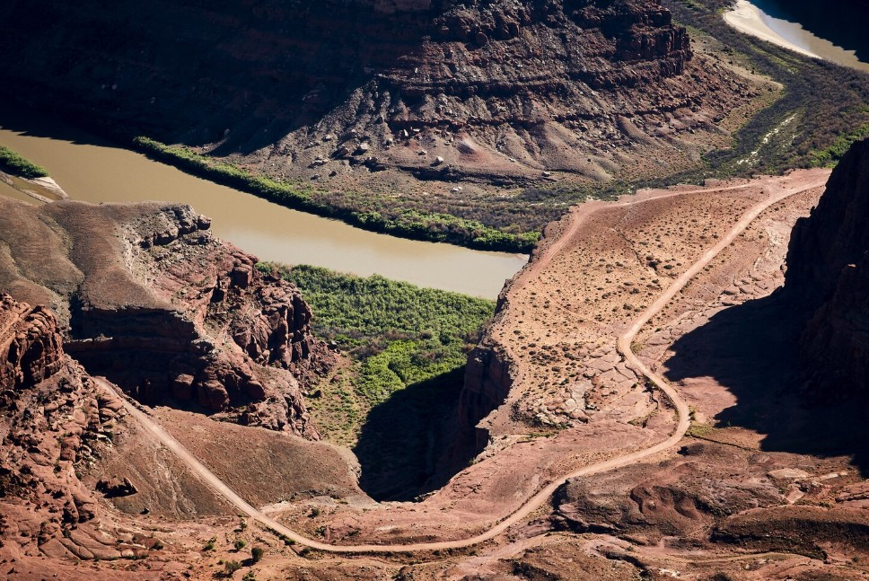
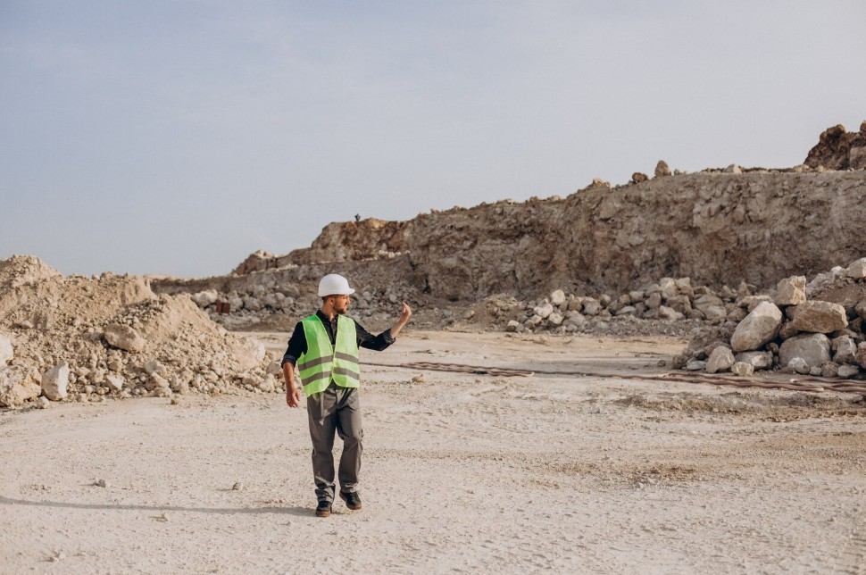

Assessoria em Recursos Naturais
Geologia · Hidrogeologia · Geofísica · Engenharia de Minas · Agronomia · Biologia
Soluções técnicas especializadas para o aproveitamento racional dos recursos naturais com rigor científico, responsabilidade ambiental e atuação em toda a América do Sul.
Quem Somos
A NRA reúne profissionais altamente qualificados, com sólida formação científica e vasta experiência em campo. Atuamos em toda a América do Sul com projetos nas áreas de geologia, hidrogeologia, geofísica, engenharia de minas, biologia e agronomia.
No atual cenário, o sucesso de projetos complexos em mineração, infraestrutura e agricultura exige mais do que a simples aplicação de receitas prontas. É necessário um olhar crítico e a coragem técnica de ir além das convenções de mercado.
Nos posicionamos como um parceiro estratégico adaptado a quebra de paradigmas. O que nos diferencia é a capacidade analítica de revisar, refinar e corrigir modelos conceituais vigentes, transformando incertezas teóricas em seguranças técnicas aplicadas à realidade do seu projeto. Nossa abordagem é baseada em evidências empíricas, combinando estratégias para entregar diagnósticos precisos e soluções sob medida onde o conhecimento convencional não é suficiente.
Para otimizar os resultados, unimos o embasamento acadêmico a tecnologias de ponta, como Inteligência Artificial e Machine Learning, gerando valor para a pesquisa mineral, mineração, estudos ambientais e desenvolvimento agrícola.
Além das teorias. Além do convencional. Soluções baseadas em evidências.
Pesquisa, prospecção e gerenciamento de matérias-primas minerais, metais, agregados, minerais industriais, petróleo e gás com precisão técnica e rigor científico.
Estudos hidrogeológicos completos, locação de poços de captação, projetos de irrigação e monitoramento da qualidade das águas subterrâneas e superficiais.
Atuamos minimizando impactos ambientais e promovendo o equilíbrio entre desenvolvimento econômico e preservação, desde o planejamento até a execução do projeto.
A Empresa

A NRA reúne profissionais altamente qualificados, dotados de formação científica e vasta experiência em campo, atuando em toda a América do Sul nas áreas de geologia, hidrogeologia, geofísica, além de adequações regulatória para normas agrícolas e ambientais.
Aplicamos conhecimento científico e metodologia precisa no desenvolvimento de estudos e soluções para o aproveitamento dos recursos naturais com rigor técnico, ética e comprometimento em cada projeto.
O Que Fazemos
Principais serviços técnicos especializados em nossas áreas de atuação.
A Geologia é a ciência que estuda as rochas que formam a crosta terrestre, sua gênese, estrutura, composição e dinâmica, incluindo os fenômenos que modelam a superfície de nosso planeta. A NRA oferece toda gama de estudos geológicos voltados para a pesquisa e gestão de recursos minerais, desde água subterrânea, metais, pedras preciosas, agregados para construção civil, minerais industriais, petróleo e gás.

A qualidade de uma obra de engenharia depende, entre outros fatores, da adaptação de seu método construtivo às condições geológicas do local, seja em obras de pequeno porte (loteamentos, condomínios, conjuntos habitacionais), ou obras de grande porte (rodovias, túneis, barragens). A NRA atua nessa interface com objetivo de facilitar a apropriação do meio ambiente às necessidades humanas para diminuir riscos, custos e impactos na interação homem-natureza, desde a fase de planejamento de obra até a execução.

A Hidrogeologia é o ramo da Geologia que estuda a ocorrência e dinâmica das águas subterrâneas em nosso planeta com relação ao seu movimento (fluxo), volume, distribuição e qualidade. A NRA atua na assessoria de trâmites burocráticos com agências e órgãos governamentais reguladores, na elaboração de estudos hidrogeológicos para locação de poços de captação, em projetos de irrigação, na caracterização hidrogeoquímica e no monitoramento e proteção da qualidade de águas superficiais e subterrâneas.

Enquanto a Geologia foca na observação direta, a Geofísica investiga a estrutura e a composição do interior da Terra por métodos indiretos. A NRA planeja, gerencia e executa levantamentos geofísicos sob medida para prospecção mineral, águas subterrâneas, monitoramento ambiental e engenharia civil.


Projetos de Compensação Ambiental e Reflorestamento.
Além dos Serviços
Além da prestação de serviços técnicos, a NRA oferece consultoria técnica e jurídica para o aproveitamento racional dos recursos naturais aplicando conhecimento científico e método rigoroso no desenvolvimento de soluções para o mercado nacional e internacional.

Execução de auditorias técnicas para averiguar procedimentos nas áreas de mineração e meio ambiente, desde a avaliação de exigências de órgãos governamentais reguladores até a aplicação de normas técnicas e boas práticas de mercado.
Saiba maisElaboramos laudos e pareceres técnicos nas áreas de geologia, hidrogeologia, mineração e meio ambiente para fins judiciais e extrajudiciais auxiliando juízes, advogados e partes na formulação e elucidação de processos jurídicos complexos.
Saiba mais
Desenvolvemos conhecimento e tecnologias voltados para a exploração e aproveitamento de recursos minerais e energéticos renováveis e não-renováveis com o objetivo de diminuir os riscos e incertezas intrínsecos dessas atividades e aumentar a competitividade dos nossos clientes.
Saiba mais